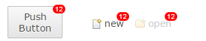
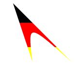
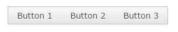
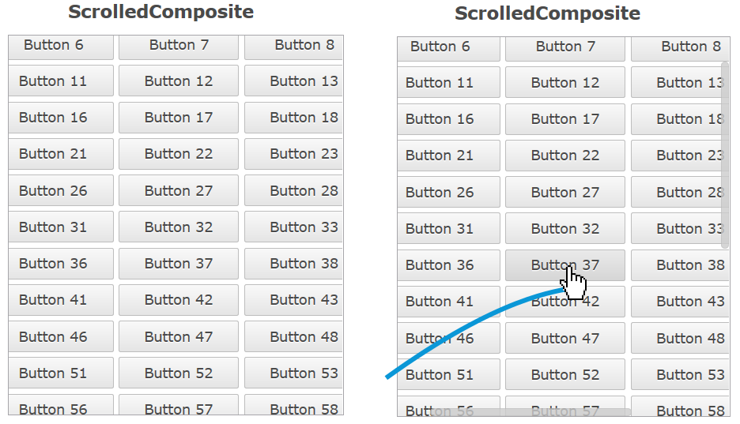

Here's a list of the most noteworthy things in the RAP 3.0 release which is available for download since June 24, 2015.
The RAP 3.0 web client will support the following browsers:
Dropping support for older browsers allowed us to remove thousands of lines of
JavaScript code and to take more advantage of modern HTML5/CSS3 features.
RAP also used to enable the so-called quirksmode in HTML in order to avoid glitches in old
IE versions. With the end of support for antique browsers, RAP now uses the HTML5
<!DOCTYPE html> declaration that enables standard mode in all browsers.
RAP may continue to work in some of the older browser, but not in Internet Explorer 8. For Windows Vista, IE9 can be manually installed. For Windows 7, IE10 is installed with Service Pack 1 and IE11 can be installed manually. Windows 8 has IE10 as it's default browser, which is upgraded to IE11 with Windows 8.1. If you still target Windows XP, you have to use either Firefox or Google Chrome.
As many other Eclipse projects, we decided to raise the minimal execution environment to Java 7. Since Jetty 9 and even some parts of Equinox now depend on Java 7, it became almost impossible to run and test RAP with Java 5. Moving to Java 7 makes our life easier and allows us to make use of some new features. With modern JREs being available even for embedded platforms, so we think that we won't exclude anyone by this move.
The Bundle-RequiredExecutionEnvironment (BREE) of all bundles has been updated to JavaSE-1.7.
Deprecated API has been removed in RAP 3.0. We provide migration guide to help you find the proper replacements.
In RAP 2.x, you could access URL parameters by calling
RWT.getRequest().getParameter(name); // OLD
The problem with this approach was that it only worked in the first request.
Moreover, RWT.getRequest() returns the actual XHR request, not the request that
returned the HTML page. That's why using this method in application code is not recommended.
Now there is a client service named StartupParameters that provides access to those
startup parameters. Since this service interface is also implemented by AbstractEntryPoint,
you can access the methods getParameter(), getParameterNames(),
and getParameterValues() directly in your entrypoint:
public class MyEntryPoint extends AbstractEntryPoint {
@Override
protected void createContents(Composite parent) {
String foo = getParameter("foo");
...
When you test your UI components, you have to simulate the environment that RAP UI code normally runs in (including the UI thread, a UISession, ApplicationContext etc.) To do so, we provide the bundle org.eclipse.rap.rwt.testfixture. However, we always claimed that the classes therein were not part the public RAP API.
From now on, we provide public API for unit tests in the form of a JUnit Rule.
Instead of calling Fixture.setUp() and Fixture.tearDown(),
you now only need to include the following line in your test cases.
This will simulate a new test context for every test method.
There's also no need to fake the PROCESS_ACTION phase anymore.
@Rule
public TestContext context = new TestContext();
The class Fixture and all its companions have been moved to the internal package
org.eclipse.rap.rwt.testfixture.internal.
The RAP port of the Nebula Grid (including GridViewer) has been moved from the RAP Incubator to the RAP repository. It supports a subset of the API from the Grid found in the Nebula Release, now also including setAutoHeight. The Nebula Grid also works with RAP specific features such as RWT.MARKUP_ENABLED and Row Templates.
The Grid is included in the RAP target platform and can be used simply by importing the org.eclipse.nebula.widgets.grid package, making it single-sourcing capable. The Nebula Grid ports for RAP 2.x versions will remain in the Incubator.
The file dialog and file upload components have been moved from the RAP Incubator to the RAP repository. FileDialog supports SWT single-sourcing and can upload multiple files with a clean user interface. It now also support file drag and drop.
The FileDialog is located in the org.eclipse.rap.filedialog bundle in the RAP target platform. Older versions of the dialog and upload components for RAP 2.x versions will remain in the Incubator.
The method Control.setParent() is now fully implemented and will move a control
from one parent to another. To indicate that the re-parenting was successful, the method will
return true. We implemented re-parenting in order to better support the E4 UI.
Be aware you must not try to replace the parent of a control that is attached to another widget
using a setControl() method (e.g. a CoolItem, an ExpandItem, or a ScrolledComposite).
Those cases are neither supported by SWT nor by RAP.
TabItem, PUSH Button and PUSH ToolItem now support badges.

Those badges can be set using a data key:
tabItem.setData( RWT.BADGE, "23" );
In TabItem and Button, the badge is overlaying the widget's border and part of the padding/margin areas. The top padding + border + margin need provide enough space to display the badge, or it will be cut off. For ToolItem, the badge is placed within the padding area, overlaying part of the content if necessary.
Several clipping methods have been implemented:
GC.setClipping( Path )GC.setClipping( Rectangle )GC.setClipping( int, int, int, int )The implementation utilizes the native HTML canvas clipping capabilities. Once a region is clipped, all future drawing operations will be limited to the clipped region.

The Button widget now supports RWT.MARKUP_ENABLED, allowing you to use an HTML subset in it's text. Also, Tree and Table now fully support RWT.TOOLTIP_MARKUP_ENABLED. This was previously not the case if the tooltip text was provided by a ColumnViewer.
In SWT, the text of a ToolItem is placed below the icon by default. If the parent ToolBar is
created with the SWT.RIGHT flag, the text is to the right of the icon.
Until now RAP behaved as though SWT.RIGHT was always set on the ToolBar, so it was
not possible to have the text below the icon. Now RAP behaves as SWT does. If your
application has a ToolBar without SWT.RIGHT, text and icon will no longer be
side by side, but on top of each other.
It's now possible to create disabled and grayed images at runtime, using the SWT constants IMAGE_DISABLE and IMAGE_GRAY.
Image disabled = new Image( display, srcImage, SWT.IMAGE_DISABLE );
Image grayed = new Image( display, srcImage, SWT.IMAGE_GRAY );
Until now every edge of a widget in RAP had to have the same border width, style and color. Now every widget that supports the border shorthand property also supports the four properties border-left, border-right, border-bottom and border-top. This enables a number of new design choices, like visually merging neighbouring widgets.

In this case a RowLayout was used with spacing set to 0 and the following custom variants:
Button[PUSH].left {
border-radius: 2px 0px 0px 2px;
border-right: none;
}
Button[PUSH].middle {
border-radius: 0px;
border-left: none;
border-right: none;
}
Button[PUSH].right {
border-radius: 0px 2px 2px 0px;
border-left: none;
}
The Control.getBorderWidth() method will from now on return the biggest width of the widgets four edges.
The focus frame (represented in the theming by Button-FocusIndicator, Combo-FocusIndicator and FileUpload-FocusIndicator) will no longer be visible if the widget is focused by the mouse. Like in MS Windows, it will only be visible when focused using the keyboard.
In the default theme the Scroll Bars now have a more modern look and feel. They are invisible until they are "activated" by the user, which is when the indicators fade-in to a semi-transparent state.
This is achieved with a number of new theming options. The up/down and left/right buttons of scroll bars can now be hidden by setting the background-image property of ScrollBar-UpButton and ScrollBar-DownButton to none.The opacity property let's you make the entire Scroll Bar (semi) transparent, with the content below visible. In addition, the new active state is used to indicate that the scrollable area is hovered with the mouse, or that the user is scrolling using the keyboard.
If you don't like the new look and feel, don't worry. The business theme makes no changes to the Scroll Bars, and by making a theme-contribution you can easily adjust the opacity for the active and non-active states to be different values (e.g. "1" for both) and/or change the Scroll Bar background from "transparent" back to a solid color.
The TabItem has several new theming properties:
Since border now also allows styling the different edges of the widget, the following properties have been removed:
There is also a new state on TabItem that the item is a child of TabFolder with the SWT.BOTTOM style flag:
:first and :last states have been added for ToolItem CSS element. This
allows first and last visible ToolItem to have distinct stylings, like different borders. The
ToolBar itself now also supports the [VERTICAL] and [FLAT] selectors.
Exploiting some of the new theming features, the ToolBar has a new default look combining all items to a single visual element. Single items are still distinguishable when hovered with the mouse. The previous look is also still available, simply by setting the SWT.FLAT style flag. This flag is used by default in workbench applications, so these will still look the same. The business theme is also not affected by this change.
The Scale widget theming has been enhanced with the following CSS properties and states:
background-image property for Scale and Scale-ThumbHORIZONTAL/VERTICAL selectors for Scale and Scale-Thumbhover state for Scale-ThumbTo adjust the look of badges (see above), the Widget-Badge element can be used. It currently supports the properties font, color, background-color, border and border-radius.
text-overflow

Table and Tree items (and columns as well) now support the property text-overflow. When set to ellipsis, texts that don't fit into their cell will end with “…” instead of being cut off. The default RAP theme already has this setting. For custom themes, the default value is clip.
The Combo-List now has an even state, allowing the Combo drop-down to have alternating background colors.
The ProgressBar has been partially rewritten to use CSS3 properties instead of vector graphics. As a result, the indicator is now layouted more precisely when the bar is nearly empty or nearly full, but as a side-effect the ProgressBar-Indicator theming no longer supports the border property. It was not used by any of the themes included in RAP, so it won't change how the bar looks by default.
The RWT Launcher now allows you to run an RWT application from its ApplicationConfiguration. You can do this by specifying the ApplicationConfiguration class in the launcher main tab, from the file/project context menu or directly from the editor.

This list shows all bugs that have been fixed for this release.
To assist you with the migration from RAP 2.x (or 1.x) to 3.0, we provide a migration guide.
 Copyright © 2024 The Eclipse Foundation. All Rights Reserved.
Copyright © 2024 The Eclipse Foundation. All Rights Reserved.